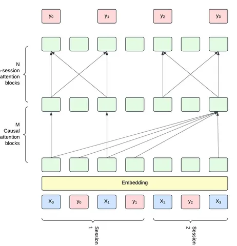

Сегодня разбираем статью от Linkedin, в которой Фёдор Борисюк и команда делятся результатами внедрения HSTU-подобной модели. Публикация интересна тем, что объединяет ключевые тренды 2024 года: идею target-aware из HSTU и использование semantic IDs из TIGER.
В работе обозначено несколько целей:
1) Избавиться от большого количества hand-crafted фичей
Авторы хотят показать, что их небольшая модель с базовыми фичами может переиграть сложные подходы и дать высокие результаты в ранжировании.
2) Использовать list-wise подходы вместо point-wise
Исторически ранжирующие модели Linkedin использовали point-wise подход, то есть оценивали каждый айтем независимо от прочих. В статье утверждается, что вероятность клика на конкретный айтем зависит не только от него самого, но и от других совместно показанных айтемов. Из-за этого авторы отказываются от point-wise и переходят на list-wise ранжирование. Ещё эта мера помогла им избавиться от rule-based бизнес-логики в обработке выходов моделей.
3) Scaling law в рекомендациях
Если в NLP и CV scaling law продемонстрирован многократно, то в RecSys — лишь в единицах исследований. Авторы ссылаются на работы, которые показывают, что при правильном увеличении модели можно увидеть scaling law (HSTU, Wukong, HLLM). Им самим удалось добиться этого, используя всего семь ключевых фичей, основанных на разных ID.
Решение, предложенное в статье, — модель под названием LinkedIn Generative Recommender (LiGR), которая собирает воедино перечисленные доработки.
До LiGR LinkedIn использовали в проде для ранжирования две отдельные point-wise модели, которые предсказывали несколько типов взаимодействия: Click Tower — вероятность клика и длительного просмотра поста; Contributions Tower — лайки, комментарии и репосты. Все фичи проходили через fully-connected слои, выдавая на выходе вероятности событий.
В LiGR авторы полностью отходят от предыдущего подхода и используют sequential-архитектуру. На вход модели подаётся хронологическая история интеракций пользователя в виде последовательности токенов, где токен — агрегация представлений признаков айтема из истории пользователя. На выходе для каждого айтема модель выдаёт вектор, где каждая компонента отвечает за отдельный тип взаимодействия.
Вдохновляясь HSTU, авторы используют target-aware постановку (в истории пользователя явно представлены не только айтемы, но соответствующие им действия совершенные пользователем) и gated attention — измененный механизм внимания с использованием гейтинга.
Также авторы предлагают использовать дополнительные attention блоки, работающие только в рамках сессий. Идея, заимствованная из SNG (Session-based Neural Graphs), заключается в том, что внутри одной сессии все айтемы могут учитывать друг друга для уточнения финальных скоров.
Эксперименты и эффекты
Один из главных результатов — исследователям удалось показать, что scaling law действительно работает. Они попробовали масштабировать практически все аспекты: флопсы, размеры эмбеддингов, размеры трансформера. В сравнении с HSTU их подход показал лучшее качество.
Ещё одно наблюдение — простое увеличение длины sequence length при фиксировании других параметров дало ощутимый рост метрик.
Один из самых заметных эффектов от внедрения модели — рост Daily Active Users (DAU) на 0,27%.
В качестве итога можно сказать, что у авторов получилось полностью отказаться rule-based подхода, основанного на устаревших принципах. А наибольший прирост производительности был получен за счёт скейлинга.
@RecSysChannel
Разбор подготовил
